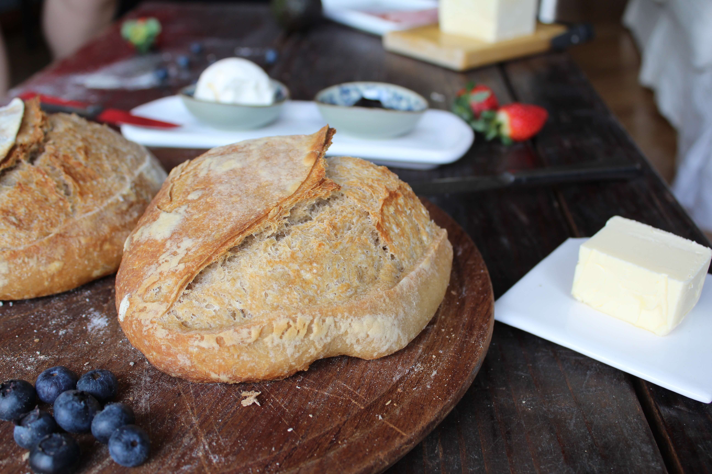

Just a pan
Quienes somos
Vision: Hacemos panes, cocina casera y fermentacion natural, sin conservantes con productos preferentemente agroecologicos
Mision: Volver a la alimentacion natural, elaborando y seleccionando productos frescos, de region y de estacion, apostando al comercio justo, la agroecologia y las iniciativas sustentables
Estas en casa...
